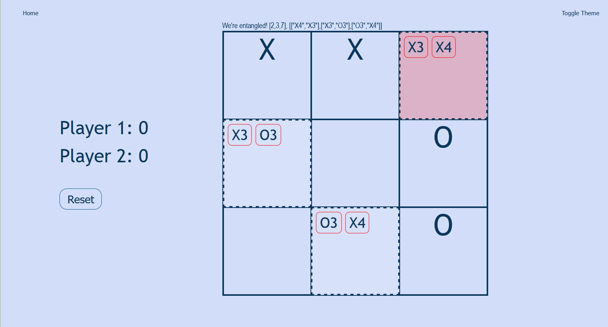
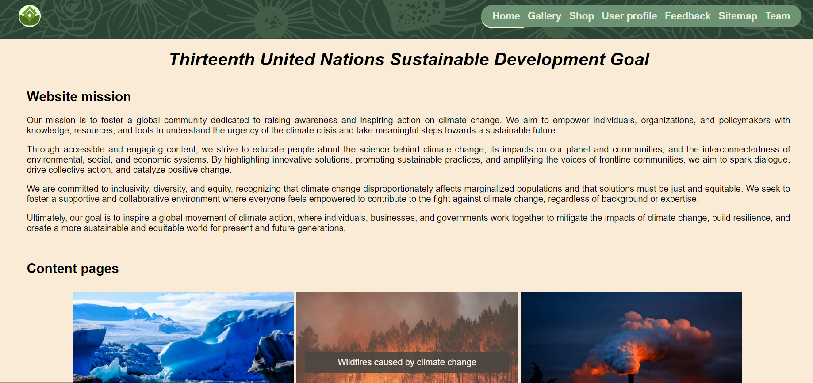
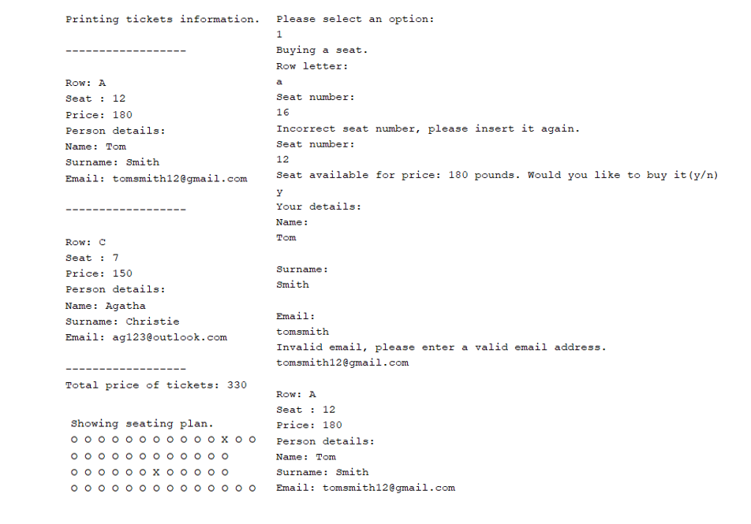
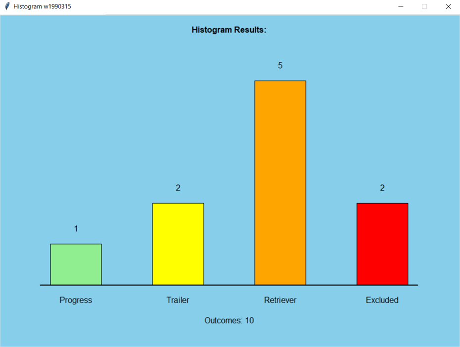
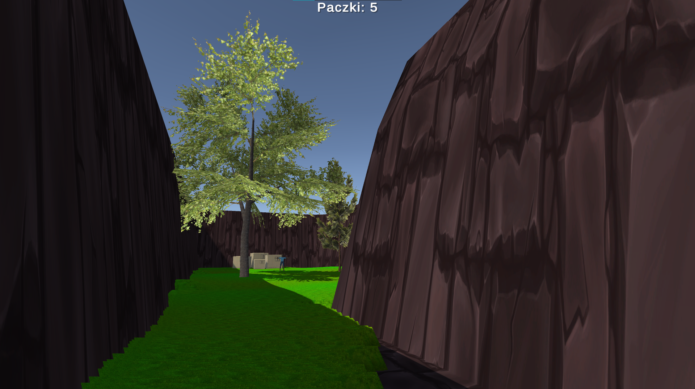

My projects
Current projects that I am working on
-
Website explaining quantum mechanics
• HTML, CSS, JS
Website will explain quantum physics by Quantum Tic-Tac-Toe game, which is expanded version of classic Tic-Tac-Toe with quantum rules such as superpositions, entanglement and collapse of the particles.
-
Game prototype project
• C++, Unreal Engine
 As a part of Game Engine Architecture that I have chosen on university, I am creating a game based from Greek mythology about Theseus and the Minotaur.
As a part of Game Engine Architecture that I have chosen on university, I am creating a game based from Greek mythology about Theseus and the Minotaur.
University projects
-
Website about climate action (Student 2) • grade: 94%

• HTML, CSS, JSIn this group project, I created the website template and several key pages:
- Home page: Showcases the logo, mission, and user-friendly navigation.
- Feedback page: Allows user communication with input fields and validation.
- Content page: Features in-depth content and internal links.
- Editor page: Includes my introduction, task list, and a customized template.
-
Creating plane management application • grade: 100%
• Java
I have created Java program to manage and track plane seat reservations effectively. Tasks include designing the main program with a user menu, methods for buying and canceling seats, and displaying seating plans. Additionally, I have included classes for storing ticket and person information, methods for managing tickets, and self-evaluation.
-
Creating grade system for university • grade: 100%
• Python
Application, I have created, determines if the user has passed the module and assigns a corresponding grade. It also stores the provided information, which is later displayed alongside a histogram.
-
Creating game about health and COVID for Game Jam
• C#, Unity
In a group with 2 friend we have created the game using Unity and C# with an interactive map where the virus was spreading. Task of the player was to stop the spread of virus. We did fully working game in one week Game Jam.
Private projects
-
Creating game about helping people for Dzemik competition
• C#, Unity
In one week I have created fully working game in theme of helping people. It is 3D game in the maze where you have to find people in help and deliver them packages. When all of them are handed, exit is opened, which you have to find to end the game.
-
Finalist of "Zwolnieni z Teorii Olympics” - leading social project "Pierwsi Z Pomoca"
I have expanded my abilities while leading a "Pierwsi Z Pomoca" social project about first aid. It was organized as a part of the competition "Zwolnieni Z Teorii". I have developed a social media campaign, which showcases both my design skills and my passion for continuing my own education. This has helped me to stay on top of the latest marketing trends and discover innovative ways to develop eye-catching visuals. Moreover, I have enhanced my project and time management skills. We gained almost 20 000 beneficiaries of the project, 11 project partners and our advertisement have been on one of the busiest bus stations in Poland in Katowice. Organizers of this competition allowed me to receive Digital Skills Certificate issued by Google and Project Management Principles Certificate issued by Project Management Institute ATP.
For the project I have been using used Canva to make graphics and posters, GIMP and Adobe Photoshop to correct and edit details, Discord and Excel for team management. My graphics were uploaded on Facebook, Instagram and TikTok. -
"Protolab Academy" start-up project

I have improved knowledge in the field of project management, startups, business, marketing and sharpening soft skills during 30 hours training programme "Akademia ProtoLab" combined with a competition for an innovative startup project. I have learned practical usage of information while creating my own idea. My project was considered to be one of the highest quality and won contest, where, after many workshops, I aimed to create my own design/business concept
-
Erasmus+ Youth Exchanges
I have participated in 3 Erasmus+ youth exchanges in Latvia, Norway and Poland in diverse international groups.
- • Geofun • I have learned the best non-formal learning methods from each other, about natural sciences and global issues, while experiencing nature outside the classroom. I have been prepared for the leader role.
- • Youth Influence and Participation In Local Culture • During the project I have leart similarities in culture, cultural and creative interest, and cultural heritage. I got to know different methods for engaging and mobilizing fellow citizens and how to communicate to cultural providers. I was able to test out different types of creative methods and learn new practical skillsas well as team work and collaboration.
- • Youth in Lens • On this youth exchange I have been sharing modern socio-cultural issues. I have talked with others about problems young people face every day and made recipients aware of what it means to be young nowadays. To conclude the project, all participants have created photography exhibition that have showed these highlighted issues.